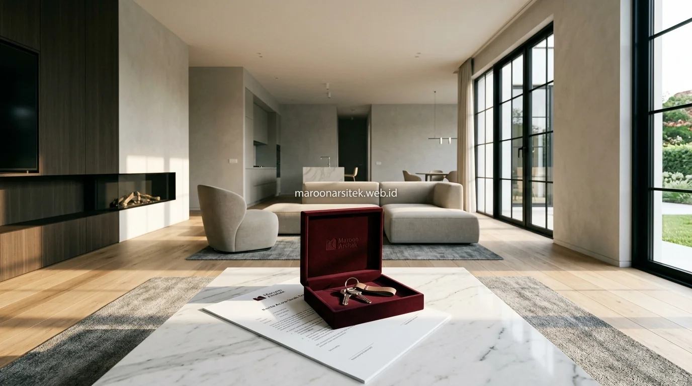

Kekhawatiran proyek mangkrak atau ditinggal tukang biasanya muncul akibat tidak adanya sistem kerja yang terikat kontrak dan standar operasional yang jelas sejak awal proyek. Bersama layanan jasa kontraktor rumah dari Maroon Arsitek, setiap tahap pembangunan hunian Anda dijalankan secara profesional, tepat waktu, dan bergaransi penuh.
Tahap Persiapan Lahan dan Perizinan Sebelum Konstruksi Dimulai
Tahap persiapan lahan mencakup pembersihan area, pengukuran ulang batas kavling, serta pemastian kelengkapan izin bangunan sebelum pekerjaan konstruksi fisik dimulai, sebagai fondasi administratif dan teknis proyek pembangunan rumah. Tahap ini menjadi syarat mutlak sebelum melangkah ke tahap struktur.
Pengukuran ulang lahan dilakukan untuk memastikan kesesuaian antara data sertifikat dan kondisi fisik di lapangan, menghindari sengketa batas lahan yang dapat menghambat proses konstruksi di kemudian hari.
- Bouwplank Presisi: Menentukan titik as bangunan dan elevasi lantai utama terhadap muka jalan.
- Uji Tanah (Sondir): Memastikan jenis pondasi (bore pile, footplat, atau strauss pile) sesuai daya dukung tanah aktual.
- Kelengkapan PBG: Memverifikasi dokumen teknis agar konstruksi aman dari kendala regulasi pada jasa bangun rumah dari nol.
Verifikasi Dokumen Sebelum Kontrak Kerja Ditandatangani
Kebutuhan kepastian legalitas sebelum proyek dimulai dijawab melalui verifikasi dokumen lahan dan perizinan secara menyeluruh, sebagai bagian dari proses sebelum kontrak kerja pembangunan rumah ditandatangani kedua belah pihak.
Verifikasi ini mencegah potensi masalah hukum yang baru muncul setelah konstruksi berjalan, yang dapat menyebabkan penghentian proyek dan kerugian signifikan bagi pemilik lahan.
Tahap Struktur, Dinding, dan Atap sesuai Jadwal yang Disepakati
Tahap struktur mencakup pekerjaan pondasi, kolom, dan balok, dilanjutkan dengan pemasangan dinding dan rangka atap sesuai jadwal yang telah disepakati dalam kontrak kerja, dengan setiap tahap diverifikasi kualitasnya sebelum lanjut ke tahap berikutnya. Keterikatan jadwal ini menjadi jaminan kelangsungan proyek sesuai rencana.
Setiap tahap struktur diperiksa oleh tim pengawas sebelum dilanjutkan ke tahap berikutnya, memastikan kekuatan dan kesesuaian dengan gambar kerja sebelum pekerjaan dinding dan atap dimulai di atas struktur yang telah selesai.
Laporan progres disampaikan secara berkala kepada klien pada tahap ini, sehingga klien mendapat kepastian bahwa proyek terus berjalan sesuai jadwal tanpa risiko terhenti tanpa informasi yang jelas saat menggunakan kontraktor rumah terpercaya.

Pemeriksaan Kualitas Struktur Sebelum Tahap Selanjutnya
Kebutuhan kepastian kualitas struktur dijawab melalui pemeriksaan menyeluruh pada setiap elemen struktural sebelum pekerjaan dinding dan atap dimulai, memastikan fondasi proyek benar-benar kokoh sebelum beban tambahan ditempatkan di atasnya.
Pemeriksaan ini menjadi titik kontrol penting yang mencegah kelanjutan pekerjaan pada struktur yang belum memenuhi standar, sehingga risiko masalah struktural di kemudian hari dapat diminimalkan sejak tahap awal.
Tahap Finishing hingga Serah Terima Kunci kepada Klien
Tahap finishing mencakup pekerjaan lantai, pengecatan, sanitasi, dan instalasi akhir, diikuti dengan proses pemeriksaan menyeluruh sebelum kunci rumah diserahkan kepada klien sebagai tanda proyek telah selesai sesuai kesepakatan. Tahap ini menjadi penutup dari keseluruhan rangkaian SOP pembangunan rumah.
Pemeriksaan akhir dilakukan bersama klien untuk memastikan seluruh item pekerjaan telah sesuai dengan spesifikasi dalam kontrak, termasuk fungsi mekanikal elektrikal dan kerapian finishing pada setiap ruangan sebelum serah terima resmi dilakukan.
Dokumen serah terima mencantumkan detail hasil pekerjaan dan masa garansi yang berlaku, memberikan kepastian tertulis bagi klien atas tanggung jawab kontraktor terhadap hasil pekerjaan setelah rumah diserahkan sepenuhnya bersama tim jasa arsitek dan kontraktor kami.
Daftar Periksa Akhir Sebelum Kunci Diserahkan
Kebutuhan kepastian kualitas sebelum serah terima dijawab melalui daftar periksa akhir (*punch list*) yang mencakup seluruh item pekerjaan, mulai dari fungsi instalasi listrik dan air hingga kerapian finishing pada setiap sudut ruangan rumah.
Daftar periksa ini memastikan tidak ada item pekerjaan yang terlewat sebelum klien menerima kunci rumah, sehingga proses serah terima berjalan dengan standar kualitas yang telah disepakati sejak awal proyek.